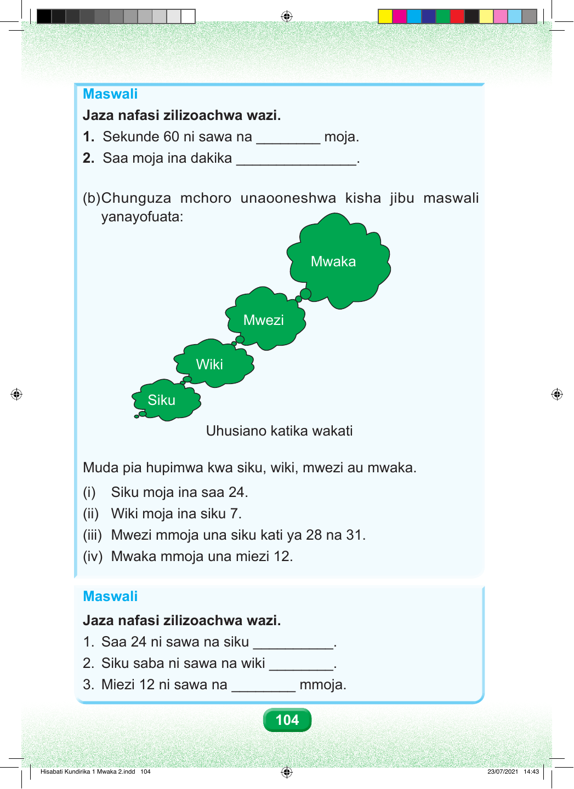

Maswali Jaza nafasi zilizoachwa wazi. 1. Sekunde 60 ni sawa na ________ moja. 2. Saa moja ina dakika _______________. (b) Chunguza mchoro unaooneshwa kisha jibu maswali yanayofuata: Mwaka Mwezi Wiki Siku Uhusiano katika wakati Muda pia hupimwa kwa siku, wiki, mwezi au mwaka. (i) Siku moja ina saa 24. (ii) Wiki moja ina siku 7. (iii) Mwezi mmoja una siku kati ya 28 na 31. (iv) Mwaka mmoja una miezi 12. Maswali Jaza nafasi zilizoachwa wazi. 1. Saa 24 ni sawa na siku __________. 2. Siku saba ni sawa na wiki ________. 3. Miezi 12 ni sawa na ________ mmoja. 104 Hisabati Kundirika 1 Mwaka 2.indd 104 23/07/2021 14:43